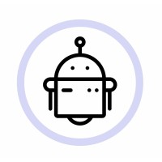

AI Developer
O mnie
Tworzę rozwiązania łączące modele językowe, integracje API, dane i logikę biznesową. AI, które realnie przyspiesza pracę z danymi, powtarzalnymi zadaniami i procesami operacyjnymi.
- Lublin / Warszawa
Oś czasu
Doświadczenie
-

28.07.2025 - obecnie
AI Developer, autoMEE Sp. z o.o.
Projektuję i wdrażam rozwiązania oparte na dużych modelach językowych oraz integracje API automatyzujące obieg dokumentów, faktur i procesy dekretacji. Odpowiadam za pełny cykl rozwoju oprogramowania, ze szczególnym naciskiem na niezawodne przetwarzanie ustrukturyzowanych danych.
-
01.09.2024 - 28.02.2025
Advanced Machine Learning
Przygotowanie danych, selekcja cech, testy statystyczne, detekcja anomalii, modele regresyjne i klasyfikacyjne, transformery i RAG.
-
2023 - obecnie
Politechnika Lubelska
Inżynieria i Analiza Danych, studia I stopnia. Programowanie, statystyka, uczenie maszynowe, bazy danych i analiza danych.